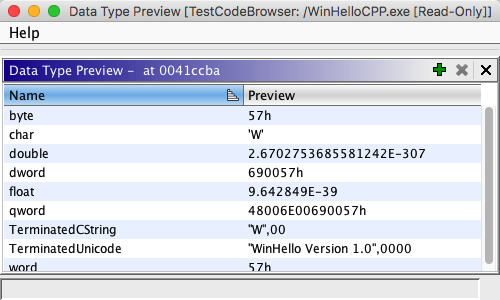

Data Type Preview
The Data Type Preview provides a preview of bytes at an address based on data
types that you choose to view. As you move the cursor to different addresses, the Preview
column will update with the appropriate representation for each data type. If the value in the
Preview column represents a valid address, you can double-click on the Preview
column and navigate to that address in the Listing.

Adding Data Types
Click the  button and select a datatype from the Data Type Chooser.
button and select a datatype from the Data Type Chooser.
OR
Data types can be dragged from the Data Type Manager
and dropped into the Data Type Preview table. If you add a structure or union, then a row
will be added for member of the structure or union.
 The data type preview does
not support dynamic data types. However, keep in mind that not all variable-length
data types are dynamic. Specifically, you can use data types that
implement Dynamic as long as they do not also extend from
DynamicDataType.
The data type preview does
not support dynamic data types. However, keep in mind that not all variable-length
data types are dynamic. Specifically, you can use data types that
implement Dynamic as long as they do not also extend from
DynamicDataType.
Removing Data Types
Select the row(s) to delete and click on the to remove data types from the table.
If you remove a structure
member, then entire structure will be removed from the preview table
Provided by: DataTypePreviewPlugin
Related Topics